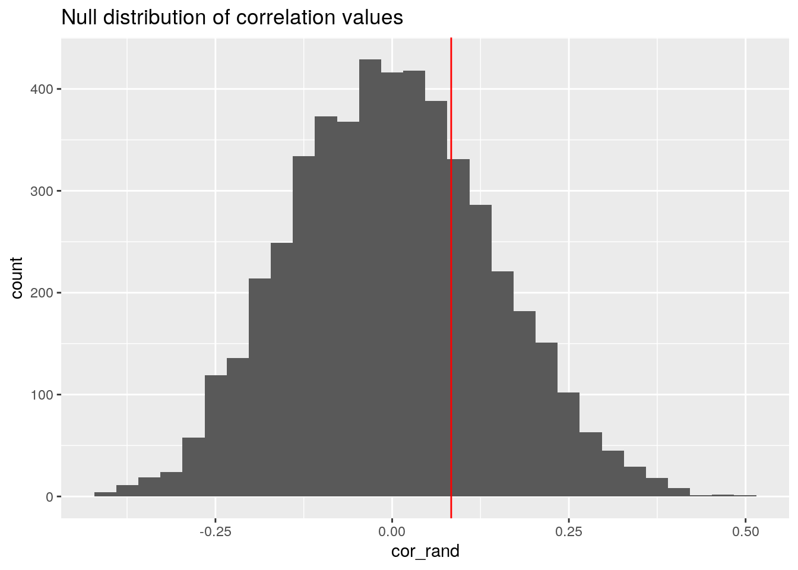
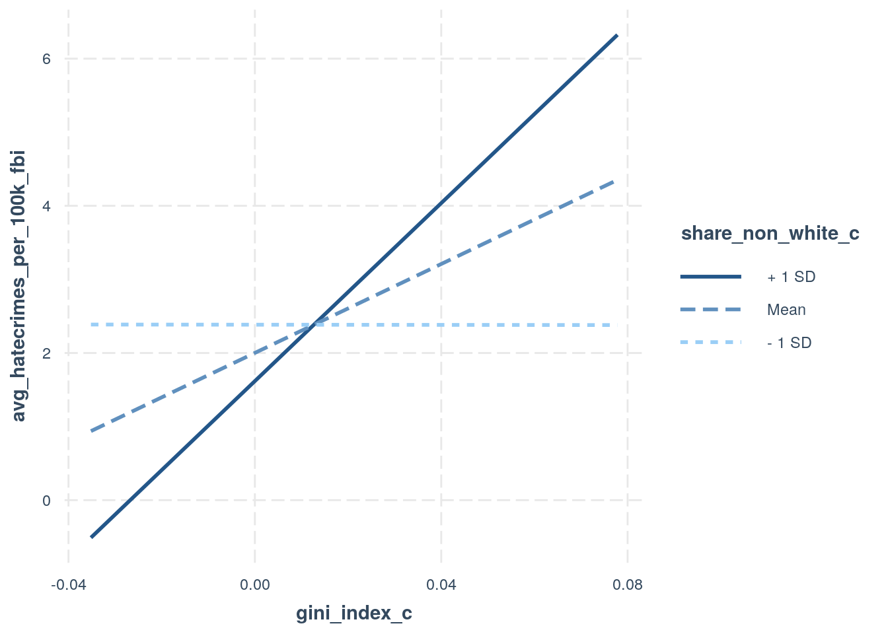
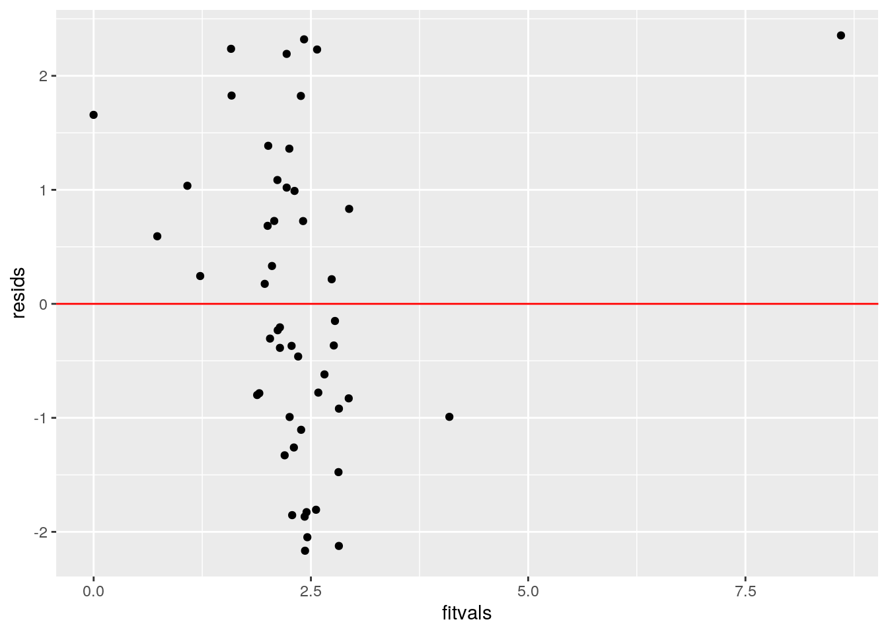
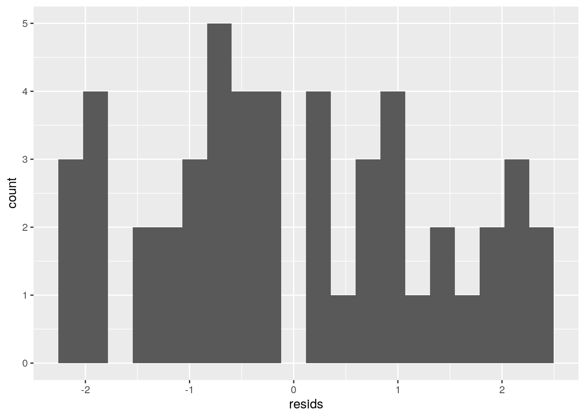
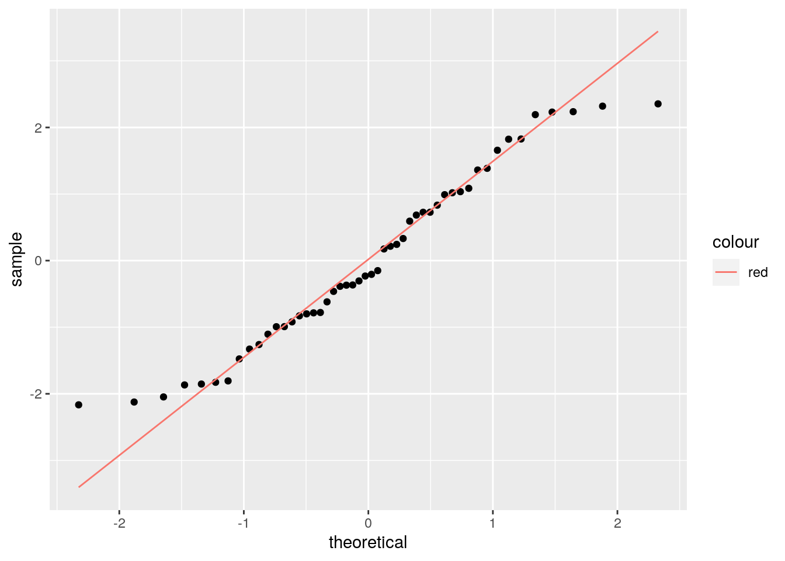
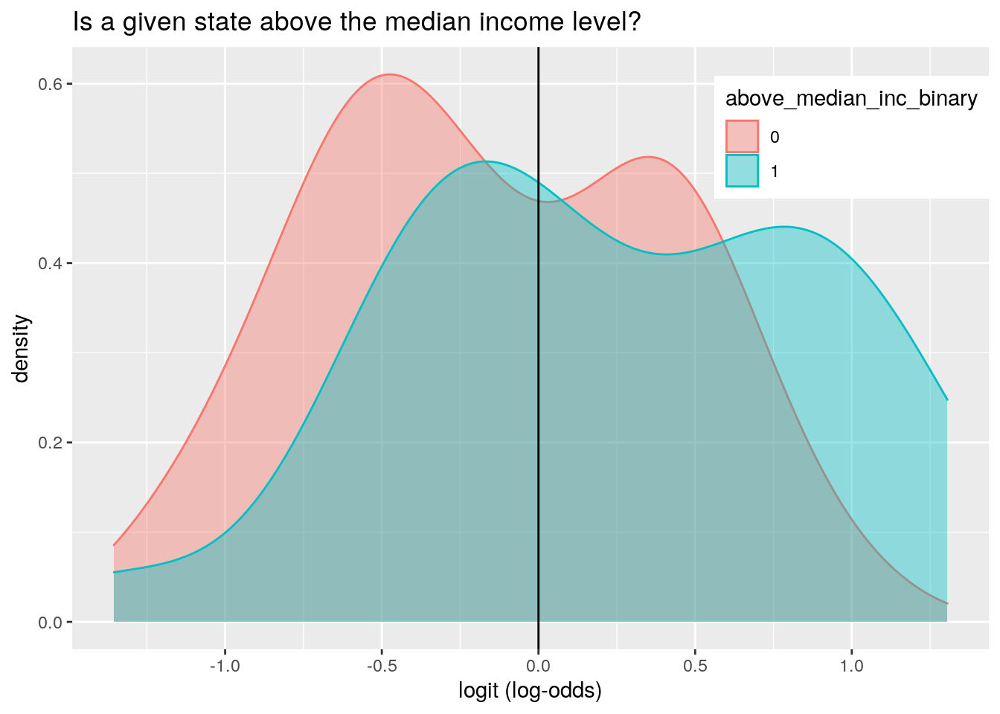
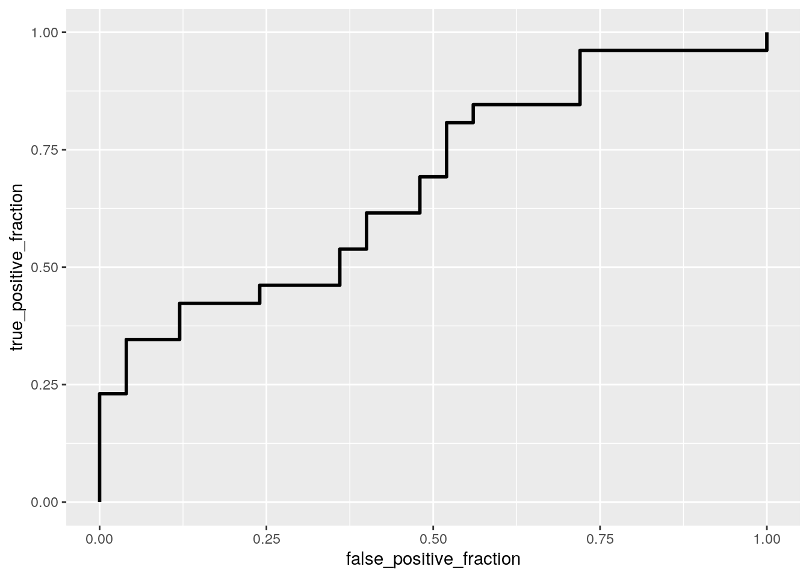

hate_crimes %>% glimpse## Rows: 51
## Columns: 13
## $ state <chr> "Alabama", "Alaska", "Arizona", "Arkansas…
## $ state_abbrev <chr> "AL", "AK", "AZ", "AR", "CA", "CO", "CT",…
## $ median_house_inc <int> 42278, 67629, 49254, 44922, 60487, 60940,…
## $ share_unemp_seas <dbl> 0.060, 0.064, 0.063, 0.052, 0.059, 0.040,…
## $ share_pop_metro <dbl> 0.64, 0.63, 0.90, 0.69, 0.97, 0.80, 0.94,…
## $ share_pop_hs <dbl> 0.821, 0.914, 0.842, 0.824, 0.806, 0.893,…
## $ share_non_citizen <dbl> 0.02, 0.04, 0.10, 0.04, 0.13, 0.06, 0.06,…
## $ share_white_poverty <dbl> 0.12, 0.06, 0.09, 0.12, 0.09, 0.07, 0.06,…
## $ gini_index <dbl> 0.472, 0.422, 0.455, 0.458, 0.471, 0.457,…
## $ share_non_white <dbl> 0.35, 0.42, 0.49, 0.26, 0.61, 0.31, 0.30,…
## $ share_vote_trump <dbl> 0.63, 0.53, 0.50, 0.60, 0.33, 0.44, 0.41,…
## $ hate_crimes_per_100k_splc <dbl> 0.12583893, 0.14374012, 0.22531995, 0.069…
## $ avg_hatecrimes_per_100k_fbi <dbl> 1.8064105, 1.6567001, 3.4139280, 0.869208…This dataset is from fivethirtyeight.com and entails the level of hate crimes across all 50 states in the US and Washington DC. Some variables in this dataset include median household income, share of unemployment (seasonally adjusted), gini index (a measure of income inequality), and hate crimes per 100,000 people.
# Create categorical variable of median household income quartile
inc_quartiles <- quantile(hate_crimes$median_house_inc, c(0.25,0.5,0.75))
inc_25 <- inc_quartiles[1]
inc_50 <- inc_quartiles[2]
inc_75 <- inc_quartiles[3]
hate_crimes <- hate_crimes %>%
mutate(house_inc_quartile = ifelse(
median_house_inc < inc_25, 1, ifelse(
median_house_inc < inc_50, 2, ifelse(
median_house_inc < inc_75, 3, 4)
)
)
)
# MANOVA
summary(manova(cbind(share_pop_hs, share_pop_metro, avg_hatecrimes_per_100k_fbi)~house_inc_quartile,data=hate_crimes))## Df Pillai approx F num Df den Df Pr(>F)
## house_inc_quartile 1 0.62296 25.335 3 46 7.939e-10 ***
## Residuals 48
## ---
## Signif. codes: 0 '***' 0.001 '**' 0.01 '*' 0.05 '.' 0.1 ' ' 1This MANOVA test suggests that there is a mean difference across quartiles of median household income in at least one of the reponse variables.
# ANOVA
summary(aov(share_pop_hs~house_inc_quartile, data=hate_crimes)) # significant## Df Sum Sq Mean Sq F value Pr(>F)
## house_inc_quartile 1 0.02530 0.025303 37.86 1.36e-07 ***
## Residuals 49 0.03275 0.000668
## ---
## Signif. codes: 0 '***' 0.001 '**' 0.01 '*' 0.05 '.' 0.1 ' ' 1summary(aov(share_pop_metro~house_inc_quartile, data=hate_crimes)) # not significant## Df Sum Sq Mean Sq F value Pr(>F)
## house_inc_quartile 1 0.0901 0.09007 2.832 0.0988 .
## Residuals 49 1.5586 0.03181
## ---
## Signif. codes: 0 '***' 0.001 '**' 0.01 '*' 0.05 '.' 0.1 ' ' 1summary(aov(avg_hatecrimes_per_100k_fbi~house_inc_quartile, data=hate_crimes)) # significant## Df Sum Sq Mean Sq F value Pr(>F)
## house_inc_quartile 1 15.79 15.792 5.913 0.0188 *
## Residuals 48 128.20 2.671
## ---
## Signif. codes: 0 '***' 0.001 '**' 0.01 '*' 0.05 '.' 0.1 ' ' 1
## 1 observation deleted due to missingnessThe ANOVA tests suggest that the share of high school educated population in a state significantly varies across difference income quartiles, as does the average amount of hate crimes per 100,000 people. However, the share of a state’s population living in metro areas does not significantly differ across different household income quartiles.
# Pairwise t-tests
pairwise.t.test(hate_crimes$share_pop_hs, hate_crimes$house_inc_quartile, p.adj = "none")##
## Pairwise comparisons using t tests with pooled SD
##
## data: hate_crimes$share_pop_hs and hate_crimes$house_inc_quartile
##
## 1 2 3
## 2 0.0015 - -
## 3 1.4e-05 0.1716 -
## 4 2.2e-07 0.0136 0.2363
##
## P value adjustment method: nonepairwise.t.test(hate_crimes$share_pop_metro, hate_crimes$house_inc_quartile, p.adj = "none")##
## Pairwise comparisons using t tests with pooled SD
##
## data: hate_crimes$share_pop_metro and hate_crimes$house_inc_quartile
##
## 1 2 3
## 2 0.649 - -
## 3 0.520 0.861 -
## 4 0.099 0.239 0.305
##
## P value adjustment method: nonepairwise.t.test(hate_crimes$avg_hatecrimes_per_100k_fbi, hate_crimes$house_inc_quartile, p.adj = "none")##
## Pairwise comparisons using t tests with pooled SD
##
## data: hate_crimes$avg_hatecrimes_per_100k_fbi and hate_crimes$house_inc_quartile
##
## 1 2 3
## 2 0.2773 - -
## 3 0.9644 0.2588 -
## 4 0.0031 0.0539 0.0028
##
## P value adjustment method: noneIn total, we have conducted 22 tests. The probability of at least one type I error is 0.6764665 and the bonferroni-adjusted significance level is 0.0022727. After using this corrected alpha, we find that there is a significant difference between share of high school educated population between the lowest quartile and every other quartile, as well as between the 2nd lowest quartile and the highest quartile. There are no significant difference between any income quartile in share of metropolitan population. Finally, there is a significant difference in average hate crimes per 100,000 citizens between the lowest income quartile and the highest income quartile. To use the MANOVA test, we must assume random samples and independent observations, along with multivariate normality of dependent variables and other assumptions. It is unlikely that our data meets this assumption of multivariate normality.
hate_crimes_dropna <- hate_crimes %>%
select(share_non_white, avg_hatecrimes_per_100k_fbi) %>%
na.omit
cor_rand <- vector()
for (i in 1:5000){
new <- data.frame(nonwhite=hate_crimes_dropna$share_non_white,
avg_hatecrimes=sample(hate_crimes_dropna$avg_hatecrimes_per_100k_fbi))
cor_rand[i] <- cor(new$nonwhite, new$avg_hatecrimes)
}
cor_statistic <- cor(hate_crimes_dropna$share_non_white, hate_crimes_dropna$avg_hatecrimes_per_100k_fbi)
p <- 2 * mean(cor_rand > cor_statistic)
ggplot() + geom_histogram(aes(cor_rand)) + geom_vline(xintercept=cor_statistic, col="red") + ggtitle("Null distribution of correlation values") ## `stat_bin()` using `bins = 30`. Pick better value with `binwidth`.
Our null hypothesis is that the correlation between share of non white residents in a state and average hate crimes does not significantly differ from the distribution of correlations obtained from randomizing the data. The alternative hypothesis is that this correlation does significantly differ from the null distribution of randomized data. From our randomization test, we conclude that there is not a significant difference between our correlation statistic from the original data and the randomized distribution (p=0.5476).
hate_crimes_dropna2 <- hate_crimes %>%
select(gini_index, share_non_white, avg_hatecrimes_per_100k_fbi) %>%
na.omit
hate_crimes_dropna2 <- hate_crimes_dropna2 %>%
mutate(gini_index_c = gini_index - mean(gini_index),
share_non_white_c = share_non_white - mean(share_non_white))
fit <- lm(avg_hatecrimes_per_100k_fbi~gini_index_c*share_non_white_c, data=hate_crimes_dropna2)
summary(fit)##
## Call:
## lm(formula = avg_hatecrimes_per_100k_fbi ~ gini_index_c * share_non_white_c,
## data = hate_crimes_dropna2)
##
## Residuals:
## Min 1Q Median 3Q Max
## -2.1656 -0.9732 -0.2190 1.0121 2.3543
##
## Coefficients:
## Estimate Std. Error t value Pr(>|t|)
## (Intercept) 2.0010 0.2171 9.217 5.1e-12 ***
## gini_index_c 30.2093 12.4491 2.427 0.019217 *
## share_non_white_c -2.5460 1.6142 -1.577 0.121599
## gini_index_c:share_non_white_c 201.0655 53.8540 3.734 0.000519 ***
## ---
## Signif. codes: 0 '***' 0.001 '**' 0.01 '*' 0.05 '.' 0.1 ' ' 1
##
## Residual standard error: 1.369 on 46 degrees of freedom
## Multiple R-squared: 0.4012, Adjusted R-squared: 0.3621
## F-statistic: 10.27 on 3 and 46 DF, p-value: 2.709e-05For a state with a mean gini index and share of non-white people, there were 2.001 predicted hate crimes per 100,000 people. For a one unit increase in the gini index, the predicted hate crime rate rose by 30.21 hate crimes per 100,000 people after adjusting for the share of non-white people. For a one unit increase in the share of non-white people, the predicted hate crime rate falls by 2.546 hate crimes per 100,000 people after adjusting for the gini index. The effect of gini index on hate crime rate increases by 201.0655 for every one unit increase in share of non-white people.
# Plot interaction
interact_plot(fit, pred = gini_index_c, modx = share_non_white_c) This model explains 36.21% of the variation in hate crime rate (adjusted R^2 = 0.3621).
# Check assumptions of linearity, normality, homoskedasticity
resids<-fit$residuals
fitvals<-fit$fitted.values
ggplot()+geom_point(aes(fitvals,resids))+geom_hline(yintercept=0, col="red")
bptest(fit)##
## studentized Breusch-Pagan test
##
## data: fit
## BP = 5.11, df = 3, p-value = 0.1639ggplot()+geom_histogram(aes(resids),bins=20)
ggplot()+geom_qq(aes(sample=resids))+geom_qq_line(aes(sample=resids, col="red")) The data appears to have an outlier. Outside of this, the assumptions of linearity, heteroskedasticity, and normality appear to be met.
# recompute regression results with robust standard errors
coeftest(fit, vcov=vcovHC(fit))##
## t test of coefficients:
##
## Estimate Std. Error t value Pr(>|t|)
## (Intercept) 2.00100 0.37978 5.2689 3.547e-06 ***
## gini_index_c 30.20929 20.20024 1.4955 0.1416
## share_non_white_c -2.54601 1.63402 -1.5581 0.1261
## gini_index_c:share_non_white_c 201.06551 289.40992 0.6947 0.4907
## ---
## Signif. codes: 0 '***' 0.001 '**' 0.01 '*' 0.05 '.' 0.1 ' ' 1Earlier, we found that the centered gini index and its interaction with share of non-white population were both significant, but this is no longer the case with robust standard errors. None of the predictor variables are significant in predicting the response variable.
# rerun regression model with bootstrapped standard errors (resampling observations)
x_gini <- hate_crimes_dropna2 %>%
pull(gini_index_c)
x_nonwhite <- hate_crimes_dropna2 %>%
pull(share_non_white_c)
y <- hate_crimes_dropna2 %>%
pull(avg_hatecrimes_per_100k_fbi)
data <- data.frame(x_gini, x_nonwhite, y)
# resample observations
samp_dist <- replicate(5000, {
boot_dat <- sample_frac(data, replace=T)
fit_temp <- lm(y~., data=boot_dat)
coef(fit_temp)
})
samp_dist %>% t %>% as.data.frame %>% summarize_all(sd)## (Intercept) x_gini x_nonwhite
## 1 0.2163778 24.16038 1.322086Compared to the robust standard errors, the centered gini index has a higher bootstrapped standard error, while the centered share of non-white population has a lower bootstrapped standard error. Compared to the original standard errors, the centered gini index has a much higher bootstrapped standard error, while the centered share of non-white population has a lower bootstrapped standard error again. This indicates that the p-value for both of these predictor variables will be larger than originally determined.
# fit logistic regression model from 2 variables (interaction not necessary)
hate_crimes <- hate_crimes %>%
mutate(above_median_inc = ifelse(house_inc_quartile >= 3, 1, 0),
unemp_percent = share_unemp_seas * 100,
gini_percent = gini_index * 100)
fit <- glm(above_median_inc~unemp_percent + gini_percent,data=hate_crimes, family="binomial")
summary(fit)##
## Call:
## glm(formula = above_median_inc ~ unemp_percent + gini_percent,
## family = "binomial", data = hate_crimes)
##
## Deviance Residuals:
## Min 1Q Median 3Q Max
## -1.5674 -1.0694 0.6927 1.1229 1.7802
##
## Coefficients:
## Estimate Std. Error z value Pr(>|z|)
## (Intercept) 5.45371 7.15981 0.762 0.446
## unemp_percent -0.52514 0.34173 -1.537 0.124
## gini_percent -0.06185 0.17358 -0.356 0.722
##
## (Dispersion parameter for binomial family taken to be 1)
##
## Null deviance: 70.681 on 50 degrees of freedom
## Residual deviance: 66.063 on 48 degrees of freedom
## AIC: 72.063
##
## Number of Fisher Scoring iterations: 4For every one percentage point increase in unemployment rate, the odds of a state’s median income being above the overall median income (each state weighted equally) decreases by 40.8527448% (after accounting for gini index). For every one percentage point increase in the gini index, the odds of a state similarly having an income above the median level decreases by 5.997612% (controlling for unemployment rate).
# classification diagnostics and confusion matrix
probs <- predict(fit, type="response")
hate_crimes$probs <- probs
class_diag(hate_crimes$probs, hate_crimes$above_median_inc)## acc sens spec ppv auc
## 1 0.5882353 0.5769231 0.6 0.6 0.6784615table(hate_crimes$probs > 0.5, hate_crimes$above_median_inc)##
## 0 1
## FALSE 15 11
## TRUE 10 15Using this logistic regression, we obtain the following results: accuracy = 58.8%, sensitivity = 57.7%, specificity = 60%, precision = 60%, AUC = .678. This confusion matrix shows us predicted classification in the row labels and true classification in the column labels, where 0/FALSE corresponds to below median income and vice versa. Using our logistic regression, we obtain 15 true positives and 15 true negatives, but also 11 false negatives and 10 false positives.
# density plot
hate_crimes <- hate_crimes %>%
mutate(above_median_inc_binary = factor(above_median_inc))
hate_crimes$logit <- predict(fit, type="link")
hate_crimes %>%
ggplot() + geom_density(aes(logit,color=above_median_inc_binary,fill=above_median_inc_binary), alpha=.4) +
theme(legend.position=c(.85,.85)) + geom_vline(xintercept=0) + xlab("logit (log-odds)") + ggtitle("Is a given state above the median income level?")
# ROC curve
ROCplot <- ggplot(hate_crimes) + geom_roc(aes(d=above_median_inc,m=probs), n.cuts=0)
ROCplot
# AUC
AUC <- calc_auc(ROCplot) %>% select(AUC)We have a 67.8% chance that a random state that is truly above the median income will have a higher predicted probability than a state that is below the median income.
# fit logistic regression from all variables
hate_crimes_small <- hate_crimes %>%
select(4:11, 13, 19) %>%
na.omit
fit_all <- glm(above_median_inc_binary~., data=hate_crimes_small, family="binomial")## Warning: glm.fit: algorithm did not converge## Warning: glm.fit: fitted probabilities numerically 0 or 1 occurredsummary(fit_all)##
## Call:
## glm(formula = above_median_inc_binary ~ ., family = "binomial",
## data = hate_crimes_small)
##
## Deviance Residuals:
## Min 1Q Median 3Q Max
## -8.803e-05 -2.100e-08 2.100e-08 2.100e-08 7.605e-05
##
## Coefficients:
## Estimate Std. Error z value Pr(>|z|)
## (Intercept) 177.39 1676150.76 0.000 1.000
## share_unemp_seas -9347.04 2540536.23 -0.004 0.997
## share_pop_metro -155.25 67206.19 -0.002 0.998
## share_pop_hs 3640.34 1409606.34 0.003 0.998
## share_non_citizen 4555.29 2350266.56 0.002 0.998
## share_white_poverty -12368.19 2918270.98 -0.004 0.997
## gini_index -1562.31 1124596.56 -0.001 0.999
## share_non_white -731.91 751979.71 -0.001 0.999
## share_vote_trump -1698.30 459487.97 -0.004 0.997
## avg_hatecrimes_per_100k_fbi -52.44 16710.63 -0.003 0.997
##
## (Dispersion parameter for binomial family taken to be 1)
##
## Null deviance: 6.4964e+01 on 46 degrees of freedom
## Residual deviance: 3.5449e-08 on 37 degrees of freedom
## AIC: 20
##
## Number of Fisher Scoring iterations: 25(All of the following effects are statistically insignificant.)
For every one percentage point increase in unemployment rate, the odds of a state’s median income being above the overall median income (each state weighted equally) decrease by 100% (after accounting for all other predictors).
For every one percentage point increase in metropolitan population, these odds decrease by 78.8281983% (after accounting for all other predictors).
For every one percentage point increase in high-school educated rate, these odds increase by 6.453506410^{17}% (after accounting for all other predictors).
For every one percentage point increase in non-citizen rate, these odds increase by 6.07257810^{21}% (after accounting for all other predictors).
For every one percentage point increase in white poverty rate, these odds decrease by 100% (after accounting for all other predictors).
For every one percentage point increase in gini index, these odds decrease by 99.9999836% (after accounting for all other predictors).
For every one percentage point increase in non-white population rate, these odds decrease by 99.9337242% (after accounting for all other predictors).
For every one percentage point increase in Trump voter rate, these odds decrease by 99.9999958% (after accounting for all other predictors).
For an increase of one hate crime per 100,000 people, these odds decrease by 40.8089596% (after accounting for all other predictors).
# classification diagnostics
probs <- predict(fit_all, type="response")
class_diag(probs, hate_crimes_small$above_median_inc_binary)## acc sens spec ppv auc
## 1 1 1 1 1 1Using this logistic regression, we obtain the following: accuracy = 100%, sensitivity = 100%, specificity = 100%, precision = 100%, and AUC = 1.
# 10-fold cross validation
k=10
data1<-hate_crimes_small[sample(nrow(hate_crimes_small)),] #put dataset in random order
folds<-cut(seq(1:nrow(hate_crimes_small)),breaks=k,labels=F) #create folds
diags<-NULL
for(i in 1:k){ # FOR EACH OF 10 FOLDS
train<-data1[folds!=i,] # CREATE TRAINING SET
test<-data1[folds==i,] # CREATE TESTING SET
truth<-test$above_median_inc_binary
fit_CV<- glm(above_median_inc_binary~., data=train, family="binomial")
probs<- predict(fit_CV, newdata=test, type="response")
diags<-rbind(diags,class_diag(probs,truth)) #CV DIAGNOSTICS FOR EACH FOLD
}## Warning: glm.fit: fitted probabilities numerically 0 or 1 occurred## Warning: glm.fit: algorithm did not converge## Warning: glm.fit: fitted probabilities numerically 0 or 1 occurred## Warning: glm.fit: algorithm did not converge## Warning: glm.fit: fitted probabilities numerically 0 or 1 occurred## Warning: glm.fit: algorithm did not converge## Warning: glm.fit: fitted probabilities numerically 0 or 1 occurred## Warning: glm.fit: algorithm did not converge## Warning: glm.fit: fitted probabilities numerically 0 or 1 occurred## Warning: glm.fit: algorithm did not converge## Warning: glm.fit: fitted probabilities numerically 0 or 1 occurred## Warning: glm.fit: algorithm did not converge## Warning: glm.fit: fitted probabilities numerically 0 or 1 occurred## Warning: glm.fit: algorithm did not converge## Warning: glm.fit: fitted probabilities numerically 0 or 1 occurred## Warning: glm.fit: algorithm did not converge## Warning: glm.fit: fitted probabilities numerically 0 or 1 occurred## Warning: glm.fit: algorithm did not converge## Warning: glm.fit: fitted probabilities numerically 0 or 1 occurredsummarize_all(diags,mean, na.rm=T) #AVERAGE THE DIAGNOSTICS ACROSS THE 10 FOLDS## acc sens spec ppv auc
## 1 0.795 0.875 0.75 0.8416667 0.8333333Using 10-fold cross validation, our out-of-sample metrics are as follows: accuracy=78.5%, sensitivity=81.5%, specificity=85.2%, precision=85.8%, and AUC=0.87.
# LASSO
# use lambda.1se
x <- model.matrix(fit_all)[,-1]
y <- as.matrix(hate_crimes_small$above_median_inc_binary)
cv <- cv.glmnet(x,y, family="binomial")
lasso1<-glmnet(x,y,family="binomial",alpha=1,lambda=cv$lambda.1se)
coef(lasso1)## 10 x 1 sparse Matrix of class "dgCMatrix"
## s0
## (Intercept) -15.369285
## share_unemp_seas .
## share_pop_metro .
## share_pop_hs 25.666816
## share_non_citizen .
## share_white_poverty -60.181723
## gini_index .
## share_non_white .
## share_vote_trump -2.799905
## avg_hatecrimes_per_100k_fbi .After performing LASSO variable selection, we find that there are three variables retained when predicting whether a state will be above median income level: share of population that is high school educated, share of white population in poverty, and share of population that votes Trump.
# 10 fold CV with lasso-selected variables
hate_crimes_lasso <- hate_crimes_small %>%
select(share_pop_hs,share_white_poverty,share_vote_trump,above_median_inc_binary)
k=10
data1<-hate_crimes_lasso[sample(nrow(hate_crimes_lasso)),] #put dataset in random order
folds<-cut(seq(1:nrow(hate_crimes_lasso)),breaks=k,labels=F) #create folds
diags<-NULL
for(i in 1:k){ # FOR EACH OF 10 FOLDS
train<-data1[folds!=i,] # CREATE TRAINING SET
test<-data1[folds==i,] # CREATE TESTING SET
truth<-test$above_median_inc_binary
fit_CV<- glm(above_median_inc_binary~., data=train, family="binomial")
probs<- predict(fit_CV, newdata=test, type="response")
diags<-rbind(diags,class_diag(probs,truth)) #CV DIAGNOSTICS FOR EACH FOLD
}## Warning: glm.fit: fitted probabilities numerically 0 or 1 occurred
## Warning: glm.fit: fitted probabilities numerically 0 or 1 occurredsummarize_all(diags,mean, na.rm=T) #AVERAGE THE DIAGNOSTICS ACROSS THE 10 FOLDS## acc sens spec ppv auc
## 1 0.895 0.9 0.9 0.9333333 0.9833333Using a logistic regression with just the variables that LASSO selected, our model’s out-of-sample AUC is 0.97, which is an improvement from the out-of-sample AUC of the logistic regression with all the variables (0.87).